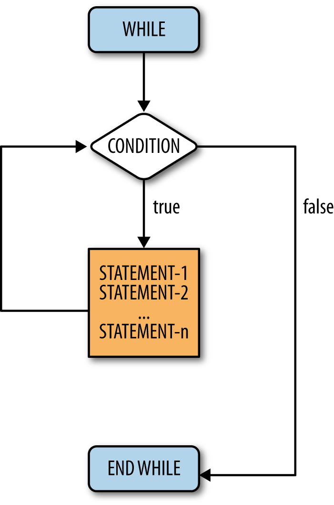
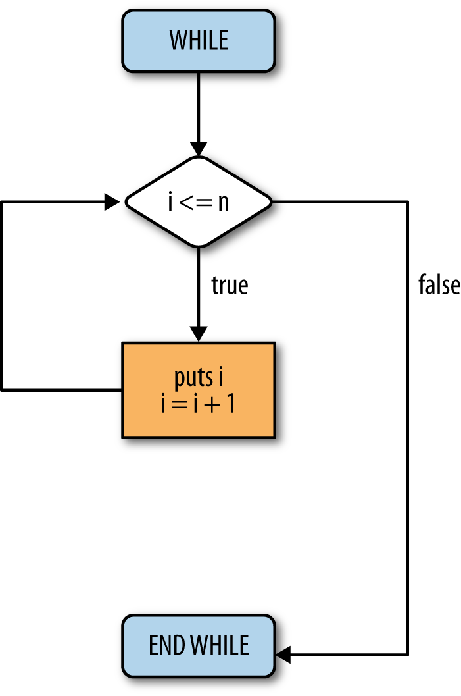
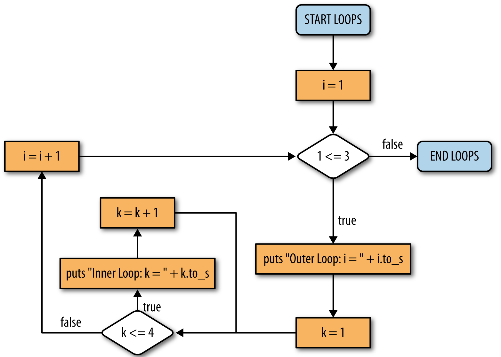

The preceding chapter introduced conditional structures and the idea of logic and control flow. Now it is time to use these concepts within a new context: loop structures. This chapter explains the logic of loop structures and presents the tools that allow them to work. These tools include the while loop, the until loop, the for loop, and the concept of nested loops.
5.2 While Loops
The job of any loop is to perform iteration or repetition, and the simplest construct for doing this is known as a while loop. The general structure of a while loop is shown in . Its corresponding flowchart is shown in .
While loop construct
1 while (condition)
2 # statement 1
3 # statement 2
4 # ...
5 # statement n
6 end

While loop flowchart
The control flow enters the while loop at the instruction: while (condition). This statement determines whether the control enters the body of the loop. If the condition evaluates to true, then the statements within the loop are executed. If the condition evaluates to false, then the control flow goes to the instruction, end, and the loop is exited. In the case where condition is true, the control flow will continue through all the statements between 1 and n, where n is any number greater than 0. Once a statement has finished executing, the control flow jumps back to the first instruction, while (condition), and the whole process starts over.
To clarify, a Ruby example is shown in . Its corresponding flowchart is shown in .
n = 5
i = 0
while (i >= n)
puts i
i = i + 1
end

Counting program flowchart
The presented code is a simple program that prints every number between 0 and 5. Walk through lines 1 through 6 and make sure you understand the code before moving on. The loop repeats and prints the value in variable i and then increments the value by one. The loop continues as long as, or while, the value in i is less than or equal to the value in n. Every loop must eventually cause the condition to change; otherwise, it loops infinitely (known as an infinite loop). In the example, the variable i is incremented; so, after six iterations, i will be larger than n.
5.3 Until Loops
Gem of Wisdom
An infinite loop is a logic problem, not a syntax problem. Recall that syntax problems are things like misspelling else (try it sometime, and see what happens). Logic errors are much harder to fix, so take your time, trace the flow of execution, and step very slowly through the program.
The until loop is just the opposite of a while loop. Instead of occurring while some condition remains true, an until loop occurs until some condition becomes true. The code and semantics of the until loop are presented in . Its corresponding flowchart is shown in .
Until loop construct
1 until (condition)
2 # statement 1
3 # statement 2
4 # ...
5 # statement n
6 end
Until loop flowchart
Until loops execute the same way as while loops; the only difference is the way they terminate. If we want the counting program to work with until loops, only one line of the program needs to be changed: while(i <= n) becomes until(i > n). The until and while loops are logical opposites, and the change in the counting program illustrates this, as a greater-than conditional operator (>) is used instead of less than or equal to (<=). shows every logical operator and its opposite operator.
Logical operators and their opposites
Operator
Opposite operator
==
!=
>
<=
<
>=
Switching from a while loop to an until loop is easy; simply switch the operator in the condition to its opposite. However, this raises an interesting point: these loop constructs are interchangeable. There is never any case where you must use an until loop instead of a while loop, or vice versa. A Ruby programmer could go her or his entire life only knowing one of these loops and never have any problem writing any program.
At this point you are probably wondering why both loop types even exist. The reason for having both is to improve the clarity of a program. Some things are simply expressed in a clearer manner with while loops than with until loops, and vice versa. Instead of saying “while this is not true” we can say “until this is true,” and instead of saying “until this is not true” we can say “while this is true.” Frequently it is easier for someone to understand a program that simply tests for the existence of true instead of not true.
In the counting program from , the variable i is a counter. Using counters is common to many tasks that require automation. Anytime a given set of instructions needs to be executed a certain number of times, we will be using counters. Ruby actually does not require us to set up the counter at all. Instead, it is possible to give a set of numbers for a loop to iterate through.
5.4 For Loops and Nested Loops
For Loops
A for loop takes a group of elements and runs the code within the loop for each element. This can be used to run a piece of code a certain number of times, or the operations can actually be based on the value. In , we see puts num is executed once for each value of num. That is, the loop will execute six times, and six lines with numbers 0 through 5 written one number per line will be generated. The range of values for num is defined by the construct 0..5 (see line 1), which represents all the integer values between 0 and 5 inclusive.
for num in (0..5)
puts num
end
Nested Loops
A nested loop is a loop inside another loop. Although all kinds of loops can be nested, the most common nested loop involves for loops. These loops are particularly useful when displaying multidimensional data.
When using these loops, the first iteration of the first loop will initialize, followed by the second loop. The second loop will completely finish before the first loop moves on to its next iteration. If that sounds confusing, the example in should help you understand the concept. Its corresponding flowchart is shown in .
for i in (1..3)
puts "Outer loop: i = " + i.to_s
for k in (1..4)
puts "Inner loop: k = " + k.to_s
end
end
If you execute the program presented, you will see that the outer loop is displayed three times. However, between each outer loop, four iterations of the inner loop are run.
The flowchart illustrates the internal computation necessary to execute the code presented. The code itself, however, is easier to follow than the actual flowchart. Note thus the essence of using the proper code structure for a particular task.
Nested loops can be a powerful tool when displaying data involving both rows and columns. For example, it is possible to make a program that would print a calendar that displays 12 different months, and for each month, displays each day.

Nested loop flowchart
5.5 Infinite Loops
A classic problem, especially among new programmers, is that a small mistake can lead to implementing a program that simply will not stop.
has an initial value of 5 stored in the variable i in line 3. The loop indicates that we should continue as long as i is greater than zero. Line 5 increments i. Hence, the loop condition of i > 0 is always true; so the loop will never terminate. When you run the program, it will look like nothing is happening, but in actuality, your computer is quite busy. It is happily repeating lines 4 and 5 forever. To terminate the program, hold down the Ctrl key and press C. This is an old key sequence that is an abbreviation for cancel, one of the arcane things you should memorize. (Ctrl-C cancels execution, and Ctrl-D ends the file.) There are a few other Ctrl sequences, but these two are all you need to make it through this book.
Infinite loops
1 puts "Count from 0 to ?"
2 n = gets.to_i
3 i = 5
4 while (i > 0)
5 i = i + 2
6 end
Assume you realize that you are in an endless loop, and you want to fix it. Sometimes new programmers simply execute the program again with no changes. Let us assure you that if you do not make a change, nothing will change. The program will once again run indefinitely.
The secret to fixing an endless loop is to check the terminating condition and make sure that it will ultimately be satisfied. Hence, change something but do not change things randomly. Identify the cause of the problem, make a change that makes sense, and then test to see if your change has fixed the problem.
5.6 Example: Finding Prime Numbers
You now know enough to write numerous computer programs in Ruby, and we will soon finally be able to stop worrying about the details of a programming language and return to the fundamentals of computer science. In fact, at this point, you really know enough to compute mathematically just about anything that can be computed. To provide a little more practice with the topics we have discussed, let’s return to our prime number example. First we present a Ruby implementation (), and then we explain the algorithm illustrated in detail.
# Initialize our counter
i = 1
# i: [0, 100]
while (i <= 100)
# Initialize prime flag
prime_flag = true
j = 2
# Test divisibility of i from [0, i/2]
while (j <= i / 2)
# puts " i ==> " + i.to_s + " j ==> " + j.to_s
if (i % j == 0)
prime_flag = false
# break
end
j = j + 1
end
# We found a prime!
if prime_flag
puts "Prime ==> " + i.to_s
end
# Increment the counter
i += 1
end
Recall that a number is considered prime if and only if its only divisors, commonly called factors, are 1 and itself. For example, 9 is not prime while 7 is. As hinted in , it is unnecessary to check for factors until you reach the actual number (minus one) since the largest divisor must be no greater than half the number itself. A prime number implementation can be optimized by using the knowledge that we can terminate the loop early.
The Ruby implementation shown in includes a main loop that terminates at half the number rather than continuing until the actual number (minus one). Using this modification, we eliminate roughly half the number of loop iterations needed to determine if the number is a prime. If the number being tested is large, such a reduction can be significant in terms of the actual execution time.
Gem of Wisdom
Step through and make sure you agree that this finds prime numbers. Does it think 7 is a prime number? Try 9. Try 17. Convince yourself that this approach works.
Now let’s go through the code in detail.
Line 2 initializes i to 1 and defines i as an integer.
Line 5 starts an outer loop to begin the prime number search.
Line 7 sets a flag to true. The idea is that for each potential prime we assume it is indeed a prime number until we know differently.
Line 10 begins an inner loop that tests all values from 2 to i/2.
Line 11 is our first example of the debugging process we discussed at the end of . As seen in our prime number implementation, we commented out line 11. Thus, the computer simply skips everything from the pound sign (#) until the end of the line. However, if we were in the debugging stage of program development and wanted to see the values of i and j at a key point, this is a great place to look at them. You can uncomment this line just to watch how this program works. Many people will tell you, “Put in some output statements to see what is going on,” but part of the art to this is finding out the best place to put them so that they give you the most information with the least number of output statements. Too many output statements may overwhelm the programmer and result in having her or him looking erroneously for the needle in the haystack.
Many real-world programs are filled with statements, like the one on line 11, that are commented out once everything is working. Programmers like to leave them in so that they will be handy if anything goes wrong in the future. Furthermore, although commented lines are nonexecutable, in trying to delete them you might accidentally delete executable lines. Thus, since their presence can only potentially help in the future, and their deletion might accidentally cause the deletion of executable lines, we strongly suggest that you never delete a properly placed debugging statement.
In line 12, the key test is performed to see if the value we are testing divides evenly by a value between 2 and its half. If no remainder exists, the number divides evenly by something other than 1 and itself, and thus is not a prime. We then turn the flag off.
Line 14 has a new command called break. The break statement is an optimization that simply says that, once you know that a given condition is met, there is no need to further execute the loop. In our case, we can terminate the loop once we know that the value is not prime; there is no need to test for any additional potential factors. That is, once we find any factor other than 1 or itself, the candidate number is not a prime number, so we can end the testing of all values. In our case, this means the next statement executed will be line 16.
Line 14 is currently commented out. You should try the program once keeping the line commented out as is and once with it included in the execution. You should see that including the break statement results in the program running faster; you may need to try to find all primes from 1 to 10,000 (change line 2 from 100 to 10,000) to really see a difference.
Line 16 increments j, and line 17 ends the inner prime search loop.
Line 19 executes for each value being tested, and if prime_flag remains true despite running through the entire inner loop, then the prime value is output. The to_s method converts the integer i to a string to display it (output) with the puts (output string) command.
Line 23 increments the value of i, and processing continues. The syntax used to increment i adds, subtracts, multiplies, or divides a variable by a value and immediately stores the result in the original variable. We can use the shorthand notation shown on line 23 of .
Gem of Wisdom
Note that in line 23 of , we introduce a new shorthand construct known as op=, where the op can be any legal operator between two variables. So, a op= b means a = a op b. In line 23, the variable i is incremented by one.
Here is the output of this program. We changed it so that it checks for primes only between 1 and 25.
$ ruby prime.rb
Prime ==$>$ 1
Prime ==$>$ 2
Prime ==$>$ 3
Prime ==$>$ 5
Prime ==$>$ 7
Prime ==$>$ 11
Prime ==$>$ 13
Prime ==$>$ 17
Prime ==$>$ 19
Prime ==$>$ 23
We suggest that you do not look at the program we have supplied for too long and just look at the algorithm. See if you can write your own program to find prime numbers. Then just use our program as a guide if you run into any problems.
5.7 Summary
You are now able to write numerous programs in Ruby. You also now have a better idea of what an algorithm is. What remains are topics that simplify the writing of complex algorithms and programs.
5.7.1 Key Concepts
Loop structures force the computer to repeat a set of steps until a condition is met. This powerful tool greatly decreases the amount of code that must be written for a task to be repeated.
While loops, until loops, and for loops can be used to create a loop structure.
Nested loops are loops within loops.
5.7.2 Key Definitions
Loop structure: A structure used to repeatedly execute a set of instructions.
Nested loop: A loop contained within a loop.
5.8 Exercises
For each of the following subproblems, convert the given loop type (while, until) into its opposite.
while(x == 5)
until(x < 7)
until((x != 0) and (y > 2))
Walk through the program in and explain what it does.
Code for Exercise 2
1 puts "Enter a number >= 0: "
2 n = gets.to_i
3 a = 1
4 while (n > 1)
5 a = (n * (n - 1)) * a
6 n = n - 2
7 end
8 puts a
Write a program to calculate compounded interest using a while loop. The user inputs the amount deposited, the interest rate (as a percentage) per period, and the number of periods the deposit accumulates interest. Compound interest means that every period, your new balance is calculated using the last period’s balance times the interest rate.
Implement the mod operator without using the mod operator but using a loop. (Assume the numerator is always greater than the denominator and both are greater than 0.)
Make a simple calculator. It should read in two numbers, apply an operator (+, -, *, /), and display the result. It should continue to do this until a condition of your choosing stops it.
Write a program that outputs the first 20 numbers in the Fibonacci sequence. In the Fibonacci sequence, the current number is the sum of the previous two numbers. The first two numbers in the sequence are 1 and 1.